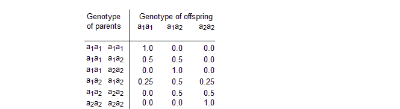
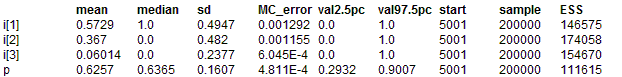

Pigs: genetic counseling and pedigree analysis
Spiegelhalter (1990) uses exact methods to analyse a small pedigree. This pedigree was previously used by Cannings and Thompson (1981) to illustrate their 'peeling' procedure to provide likelihoods for gene frequencies and probabilities for individuals being affected or carriers. We assume the pedigree refers to pigs which have the possibility of carrying a recessive gene: thus each pig has a genotype a
1a
1, a
1a
2 or a
2a
2, in which only those with a
2a
2 are affected with the trait, while those with a
1a
2 are carriers of the defective allele a
2. We assume that Ian (the consequence of a mating between Fred and his Aunt Clare) is yet to be born, and all that is known is that Fred's niece Jane has the trait. We wish to estimate the prevalence p of the allele a
2, and predict the chance of Ian being affected. The conditional probability distributions are as follows. For the genotype of the founder nodes Ann, Brian, Eric and Henry we assume a binomial distribution
Founder ~ Binomial(q, 2)
where Founder takes values 0, 1 or 2 for genotypes a
2a
2, a
1a
2 and a
1a
1 respectively, and q = 1
- p is the prevalence of the allele a
1. This is equivalent to assuming Hardy Weinberg equilibrium, giving P(a
1a
1) = q
2, P(a
1a
2) =2 q (1
- q) , P(a
2 a
2) = (1
- q)
2.
For the genotype of offspring we have the standard Mendelian inheritance probabilities given by the following table.

For a recessive gene the genotype-to-phenotype penetrance probabilities are given by:
The necessary inheritance probabilities are read in from the data file as an array
BUGS code for Pigs model:
model
{
q ~ dunif(0,1) # prevalence of a1
p <- 1 - q # prevalence of a2
Ann1 ~ dbin(q,2); Ann <- Ann1 + 1 # geno. dist. for founder
Brian1 ~ dbin(q,2); Brian <- Brian1 + 1
Clare ~ dcat(p.mendelian[Ann,Brian,]) # geno. dist. for child
Diane ~ dcat(p.mendelian[Ann,Brian,])
Eric1 ~ dbin(q,2)
Eric <- Eric1 + 1
Fred ~ dcat(p.mendelian[Diane,Eric,])
Gene ~ dcat(p.mendelian[Diane,Eric,])
Henry1 ~ dbin(q,2)
Henry <- Henry1 + 1
Ian ~ dcat(p.mendelian[Clare,Fred,])
Jane ~ dcat(p.mendelian[Gene,Henry,])
A1 ~ dcat(p.recessive[Ann,]) # phenotype distribution
B1 ~ dcat(p.recessive[Brian,])
C1 ~ dcat(p.recessive[Clare,])
D1 ~ dcat(p.recessive[Diane,])
E1 ~ dcat(p.recessive[Eric,])
F1 ~ dcat(p.recessive[Fred,])
G1 ~ dcat(p.recessive[Gene,])
H1 ~ dcat(p.recessive[Henry,])
I1 ~ dcat(p.recessive[Ian,])
J1 ~ dcat(p.recessive[Jane,])
a <- equals(Ann, 2) # event that Ann is carrier
b <- equals(Brian, 2)
c <- equals(Clare, 2)
d <- equals(Diane, 2)
e <- equals(Eric, 2) ;
f <- equals(Fred, 2)
g <- equals(Gene, 2)
h <- equals(Henry, 2)
for (J in 1:3) {
i[J] <- equals(Ian, J) # i[1] = a1 a1
# i[2] = a1 a2
# i[3] = a2 a2 (i.e. Ian affected)
} }
Data
list(p.mendelian = structure(.Data=c(1.0, 0.0, 0.0,
0.5, 0.5, 0.0,
0.0, 1.0, 0.0,
0.5, 0.5, 0.0,
0.25, 0.5, 0.25,
0.0, 0.5, 0.5,
0.0, 1.0, 0.0,
0.0, 0.5, 0.5,
0.0, 0.0, 1.0), .Dim=c(3,3,3)),
p.recessive = structure(.Data=c(1.0, 0.0,
1.0, 0.0,
0.0, 1.0), .Dim=c(3,2)),
A1 = 1, B1 = 1, C1 = 1, D1 = 1, E1 = 1, F1 = 1, G1 = 1, H1 = 1, J1 = 2)
Inits for chain 1
list(Ann1 = 2, Brian1 = 2, Clare = 2, Diane = 2, Eric1 = 2, Fred = 2, Gene = 2, Henry1 = 2, Ian = 2, Jane = 3)
Inits for chain 2
list(
Ann1 = 2.0,
Brian1 = 1.0,
Clare = 3.0,
Diane = 2.0,
Eric1 = 2.0,
Fred = 3.0,
Gene = 3.0,
Henry1 = 2.0,
I1 = 2.0,
Ian = 3.0,
Jane = 3.0,
q = 0.7381)
ResultsOne update took 0.06ms
Update methods
Updater type Size Depth
Ann1 discrete slice updater 1 2
Brian1 discrete slice updater 1 2
Clare discrete slice updater 1 3
Diane discrete slice updater 1 3
Eric1 discrete slice updater 1 2
Fred discrete slice updater 1 4
Gene discrete slice updater 1 4
Henry1 discrete slice updater 1 2
I1 univariate forward updater 1 -6
Ian univariate forward updater 1 -5
Jane discrete slice updater 1 5
q conjugate beta updater 1 1

DIC direct parents crashes
We note a number of important tricks. First, each genotype is a 3-valued categorical variable with conditional probabilities either determined by the binomial (Hardy-Weinberg equilibrium) distribution (for founder nodes) or from the Mendelian inheritance probabilities which are stored as a 3-dimensional array
p.mendelian. In the latter case, the genotype of the parents picks which row of the matrix is used for the distribution. However, the rows of this matrix are indexed by values 1, 2 or 3, whilst the genotypes of the founder nodes take values 0, 1 or 2. Since BUGS does not allow subscripts to be functions of variables, we must first add 1 to the genotype of the parents (for example,
Ann = Ann1 + 1) and use these new variables as subscripts to the matrix
p.mendelian. The genotype-to-phenotype distribution is handled similarly in a matrix
p.recessive. Second, the
equals function
equals(Ann, 2) allows the calculation of P(Ann's genotype = 2) (i.e. a carrier), whilst
equals(Ian, J) calculates P(Ian's genotype = J), where J=3 implies that Ian is affected.
Check of externalization first process
mean median sd MC_error val2.5pc val97.5pc start sample ESS
i[1] 0.5717 1.0 0.4948 0.001695 0.0 1.0 5001 100000 85192
i[2] 0.3685 0.0 0.4824 0.00153 0.0 1.0 5001 100000 99367
i[3] 0.05981 0.0 0.2371 8.037E-4 0.0 1.0 5001 100000 87047
p 0.6258 0.636 0.1608 7.119E-4 0.2935 0.9013 5001 100000 51034
second process
mean median sd MC_error val2.5pc val97.5pc start sample ESS
i[1] 0.5717 1.0 0.4948 0.001695 0.0 1.0 5001 100000 85192
i[2] 0.3685 0.0 0.4824 0.00153 0.0 1.0 5001 100000 99367
i[3] 0.05981 0.0 0.2371 8.037E-4 0.0 1.0 5001 100000 87047
p 0.6258 0.636 0.1608 7.119E-4 0.2935 0.9013 5001 100000 51034
mean median sd MC_error val2.5pc val97.5pc start sample ESS
i[1] 0.5729 1.0 0.4947 0.001292 0.0 1.0 5001 200000 146575
i[2] 0.367 0.0 0.482 0.001155 0.0 1.0 5001 200000 174058
i[3] 0.06014 0.0 0.2377 6.045E-4 0.0 1.0 5001 200000 154670
p 0.6257 0.6365 0.1607 4.811E-4 0.2932 0.9007 5001 200000 111615